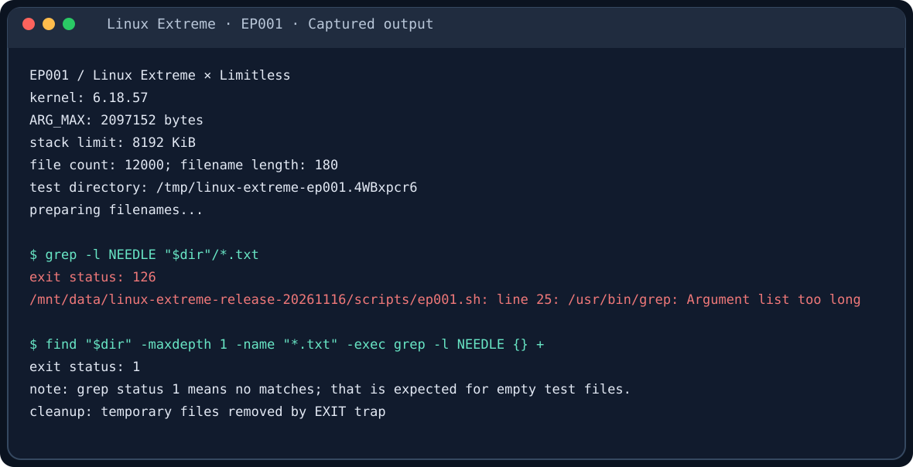

LINUX EXTREME / EP001 / ARGUMENT EXTREME
一条命令究竟能有多长？
文件明明存在，为什么 grep 还没来得及运行就失败了？
01 · The Challenge
Shell 将通配符 *.txt 展开成大量文件路径后，通常通过 execve() 启动 grep。当参数和环境字符串及其相关开销超过内核允许的边界时，启动会因 E2BIG 失败。错误可能来自 Shell，而不是 grep 本身。
02 · The Experiment
下载 实验脚本 ep001.sh，在专用 Linux 虚拟机中执行：
bash ep001.sh 12000 180脚本在 /tmp 下创建独立目录，生成大量长文件名，然后分别尝试 Shell glob 和 find -exec ... +。实验在退出时自动清理临时目录。实际是否触发 E2BIG 取决于系统限制、路径长度和环境变量。
实验实录 · Verified Run
2026-11-16 在 Linux 6.18.57 x86-64 上实际执行。测试 12,000 个文件名（每个 180 字符），ARG_MAX = 2097152 字节，软栈限制 8192 KiB。下图为将真实 output.txt 程序化渲染成的终端模拟器截图，并非直接屏幕捕获。

下载完整原始执行日志 · 下载结果摘要 · 查看截图生成器源码
$ bash ep001.sh 12000 180
ARG_MAX: 2097152 bytes
stack limit: 8192 KiB
file count: 12000; filename length: 180
$ grep -l NEEDLE "$dir"/*.txt
exit status: 126
/usr/bin/grep: Argument list too long
$ find "$dir" ... -exec grep -l NEEDLE {} +
exit status: 1结果说明：126 是该 Shell 对外部程序无法执行的退出状态；Argument list too long 对应 E2BIG。分批方案返回的 1 是 grep 没有匹配到内容（本次文件均为空），不等于再次触发 E2BIG。脚本执行结束后会自动删除专用临时目录。
03 · The Breaking Point
getconf ARG_MAX
ulimit -s
strace -f -e execve bash -c 'grep -l NEEDLE /tmp/your-test-dir/*.txt'请将示例路径替换成脚本输出的测试目录。观察 execve 的返回值，比较环境变量和栈限制变化前后的结果。
04 · Under the Hood
Linux 的参数限制不只是一个固定字节数：参数字符串和环境字符串总量、指针开销、栈资源限制，以及单个字符串长度限制都会产生影响。getconf ARG_MAX 可用于观察当前接口报告的限制，但它不等于所有文件名字符数的简单总和。
05 · Beyond the Limit
当命令行参数无法一次容纳所有文件路径时，可以改为分批处理：
find /tmp/your-test-dir -maxdepth 1 -type f -name '*.txt' -exec grep -l NEEDLE {} +对于文件名可能包含空格、换行的场景，使用 NUL 分隔的管道：
find /tmp/your-test-dir -type f -name '*.txt' -print0 | xargs -0 -r grep -l NEEDLE06 · The Next Question
一个文件名最长可以多长？文件路径和文件名的限制为什么不同？下一站：FILESYSTEM EXTREME。